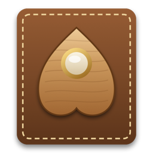

Planchette BETA 0.3
Planchette is the app I use to write for my blog on the Air, and it works with any blog that runs on Ghost. I write in Markdown on the left, and the preview on the right scrolls along with me. The sidebar sorts my posts into drafts, scheduled and published, and edits sync in both directions, so a change I make in Ghost's web editor shows up in the app too. If a post was changed on the web after I opened it, Planchette asks me before it overwrites anything.
- The preview shows images as well, including WebP files that Lion can't open by itself.
- An inspector panel holds the slug, excerpt, tags and feature image.
- I can save a draft, publish, update or unpublish a post without opening a browser.
It's named after the pointer on a spirit board, which people used to fit with a pencil for "spirit writing". 👻